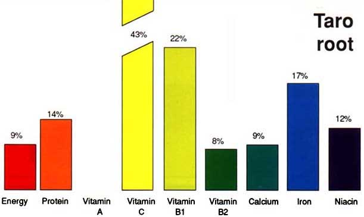
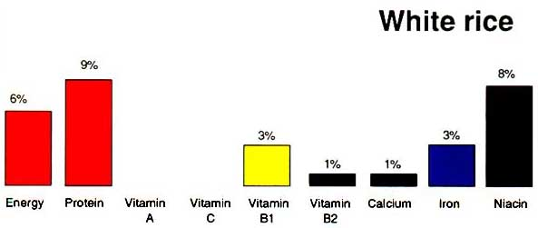

‘Ai no i kalo mo‘a. ‘Ōlelo No‘eau, No. 83
One can eat cooked kalo. Or, when the work is done, one can sit at ease and enjoy themselves.
The Taro Root
The Corm
Taro root (corm or tuber) is an excellent source of energy, which the body needs to stay active. It also provides fibre, which is needed to make the intestines and bowels work properly.
Cooking kalo is a slow food. Your goal is to break down the calcium oxalate crystals but save the nutrients.
Boiling is not a favorite cooking style because the water vampires away the nutrients.
For kalo corms: The pressure cooker is an efficient tool. Load it with corms, cut the bigger makua (parent corms) down to fist-sized. When the steam starts to flow, run it for 40 to 45 minutes.
For steam cooking, when the steam starts to flow, blast the kalo for 1 hour.
Cooked kalo must be cleaned:
- 1st clean is called Pohole: Use a spoon to scrape away the rough skin and roots.
- 2nd clean is called ihi: Use a spoon to do detail work to clean the root eyes or any rot parts.
When eaten regularly, as it usually is in most rural areas in the Pacific, taro root is also a good source of calcium and iron. Calcium helps to make strong bones and teeth, and iron helps keep blood healthy.
Nutrition Graphs
The bar graph shows that polished white rice provides some energy and protein, but very few vitamins and minerals compared to taro root or leaves. Brown rice contains more nutrients than white rice, but it is still not as nutritious as taro root or leaves. Eating rice alone is not a healthy habit. Rice should always be mixed with green and yellow vegetables, in addition to protein sources such as meat, fish, or vegetarian protein sources such as beans or lentils to make a healthy complete meal.
The traditional way of eating the root and leaves of the taro plant with fish or meat, or other body-building protein foods, will provide the nutrients necessary for a healthy and active body.
Percentage of daily needs of a child (1 - 10 yrs) filled by about 2/3 cup (6 oz or 180 gms) of cooked taro root
Percentage of daily needs of a child (1 - 10 yrs) filled by one cup of cooked rice
See this PDF Taro, Pacific Food Leaflet No. 5. Click the words to the left and the leaflet will download. Size 2.3 MB. Published by the Secretariat of the Pacific Community.
Cooked Taro Root, Corm
Serving 16 ounces (oz.) 454 grams, breaks down to about 4 servings, or 4 oz.
Amount Per Serving
- Calories 140 Calories from Fat 5
- Total Fat 1 grams (g)
- Saturated Fat 0 g
- Cholesterol 0 mg
- Sodium 8 mg
- Total Carbohydrate 37 g (10% of Daily Value)
- Sugars 2 g
- Dietary Fiber 4 g (16% of Daily Value)
- Protein 1 g
- Vitamin A 0%, Vitamin C 15%, Calcium 4%, Iron 4%
Ready To Mix Poi – 28% Solids, From Cooked Corm
Serving 16 ounces (oz.) bag of poi (like you buy at the supermarket), 454 grams, breaks down to about 4 servings, or 4 oz.
Amount Per Serving
- Calories 140 Calories from Fat 5
- Total Fat 1 grams (g)
- Saturated Fat 0 g
- Cholesterol 0 mg
- Sodium 8 mg
- Total Carbohydrate 31 g (10% of Daily Value)
- Sugars 2 g
- Dietary Fiber 4 g (16% of Daily Value)
- Protein 1 g
- Vitamin A 0%, Vitamin C 15%, Calcium 4%, Iron 4%
Detailed Nutrient information also found at this Nutrition Data website
and this foods website
(Reprinted from the Food and Agriculture Organization of the United Nations website)
(Reprinted from the Food and Agriculture Organization of the United Nations website)

Pressure cooker and folding steamer basket